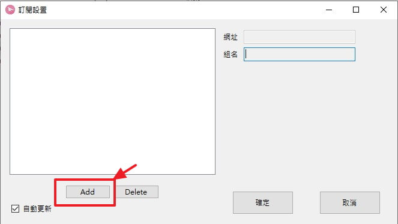

windows ShadowsocksR 用戶端使用說明
1. 下載windows用戶端解壓
2. 進入ssr-win資料夾
雙擊 ShadowsocksR-dotnet4.0.exe 啟動客戶端

將ShadowsocksR加入系統防火牆規則中,點擊 "允許存取"
啟動後,點擊
1. win系統桌面右下方箭頭圖示來顯示桌面應用
2. 點選小飛機圖示啟動 ShadowsocksR 用戶端
在小飛機上滑鼠右鍵開啟功能列表
依序選擇
1. 伺服器訂閱
2. SSR伺服器訂閱設置
點擊打開 "SSR伺服器訂閱設置"
點擊 "Add" 新增訂閱網址

1. 在這裡填入您在貓屋 "快速開始" 頁面中的訂閱網址(組名不用填)
2. 填完後,點擊確定
確定後回到功能列表,依序選擇
1. 伺服器訂閱
2. SSR伺服器訂閱設置(不通過代理)
點擊 SSR伺服器訂閱設置(不通過代理)來獲取貓屋SSR服務節點
成功獲取後會win會彈出 "SSR伺服器訂閱更新成功" 訊息,表示您已成功獲取了服務
回到功能列表,依序選擇
1. 伺服器
2. 貓屋網路科技A(此群祖名會依您所購買的服務而不同)
3. 選擇您購買的服務,點選後應用便自動連線
然後打開 https://www.google.com.tw/ 網址,成功開啟Google首頁表示你已成功翻牆,
沒有的話可能是因為網路原因導致無法連線,建議您稍稍等候下或是直接打開飛航模式,然後再關閉飛航模式來將網路重新開啟後再試試